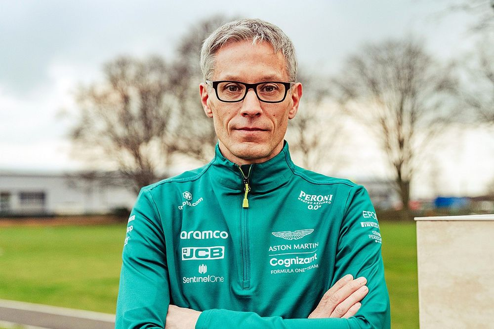
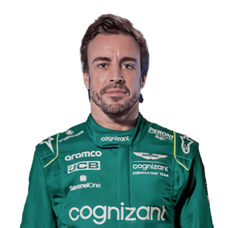
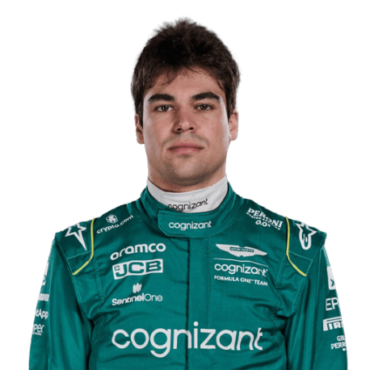

Team
Meet the team.
Team Principal

Mike Krack
Drivers

Fernando Alonso

Lance Stroll
Meet the team.
Mike Krack
Fernando Alonso
Lance Stroll
Renamed Midland F1 Racing, the team spent two seasons struggling at the back of the field before owner Alex Shnaider sold to Spyker Cars midway through the 2006 campaign. Spyker F1 scored a point in 2007 and briefly led the European Grand Prix with Markus Winkelhock. However, money woes resulted in the outfit being purchased by Indian businessman Vijay Mallya for €88 million. The team was renamed as Force India Formula 1 Team.
The team started the season strongly, capped off by Perez's third-place finish in Bahrain, marking their first podium result since the 2009 Belgian Grand Prix. The Mexican scored the team's third fastest lap in Australia, and the outfit finished the year sixth in the standings with 155 points.
Although the team only debuted the VJM08 on Day 2 of the third and final 2015 pre-season test at Barcelona, Force India had a somewhat strong start to the campaign. Hulkenberg finished seventh in Australia, yet the team went on to finish outside of the points on several occasions.
Hulkenberg left in 2017, with Esteban Ocon brought in as his replacement after having driven for Manor in the second half of the previous season. A new sponsorship deal with BWT resulted in a livery change, with the team now sporting a pink design.
Perez and Ocon returned for the 2018 campaign, which had a slow start as the drivers finished in the points just once from the opening three races. Perez came home third in the Azerbaijan Grand Prix, and that kicked off a run of four straight finishes in the points for the Mexican. Ocon, though, had to wait until the ninth race of the season in Austria for his first points of the year. Force India were put into administration during the Hungarian Grand Prix weekend, with the legal action kickstarted by creditors, including Perez, in order to allow the team to continue operating while searching for a new owner.
The team were eventually purchased by a consortium led by Lawrence Stroll. The association were only able to buy the assets of the team, resulting in Force India being excluded from the championship and replaced by the new Force India Racing Point outfit. The new squad were unable to keep any of the points scored by the old team.
Prior to the start of the 2019 season, the Force India name was dropped, with the team competing as Racing Point F1 Team. Lance Stroll, son of Lawrence, and Perez were the team's drivers for the campaign, scoring points at the first four races to go along with a double points finish in Azerbaijan. However, they struggled during the middle of the year, with Stroll finishing ninth in Canada and ending a run of six races without points.
After 61 years, Aston Martin finally returned to F1 as a constructor in 2021. Led by new owner and CEO Lawrence Stroll and Team Principal Otmar Szafnauer, the green machine was back racing in the top category of motorsport.
Following Vettel's decision to walk away from Formula 1, it was announced that Fernando Alonso would replace him at Aston Martin in 2023. The team showed great improvment in performance in the 2023 season, scoring multiple podiums but without any wins. The team finished the season at 5th position
-
-